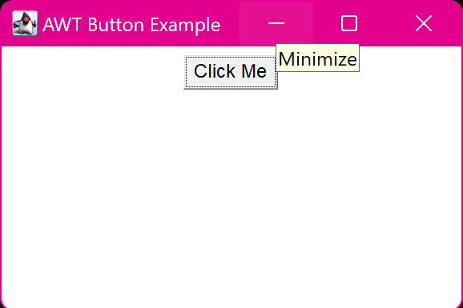

1. Create a simple AWT application that displays a button with FlowLayout manager.
import java.awt.*;
import java.awt.event.*;
class main {
public static void main(String[] args) {
Frame frame = new Frame("AWT Button Example");
Button button = new Button("Click Me");
frame.setLayout(new FlowLayout());
frame.add(button);
frame.setSize(300, 200);
frame.setVisible(true);
frame.addWindowListener(new WindowAdapter() {
public void windowClosing(WindowEvent we) {
System.exit(0);
}
});
}
}
